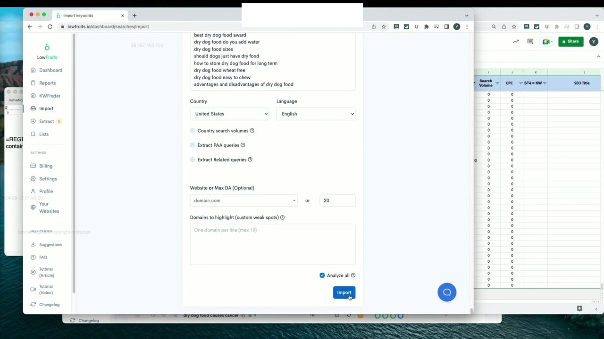
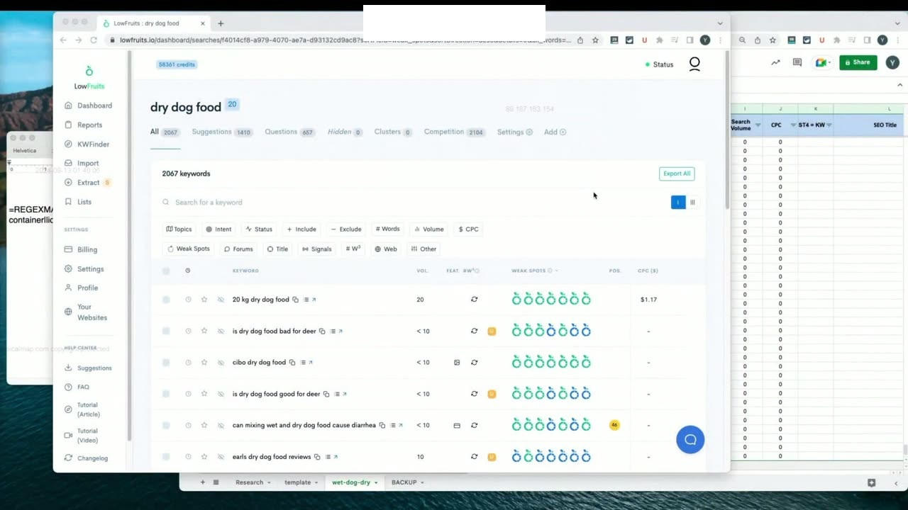
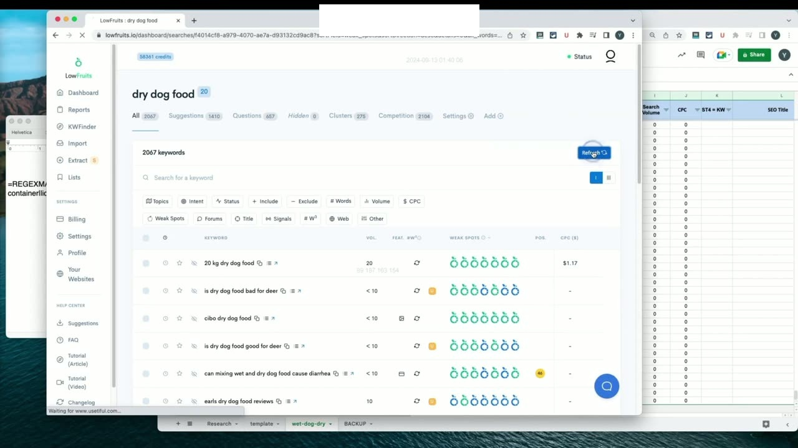
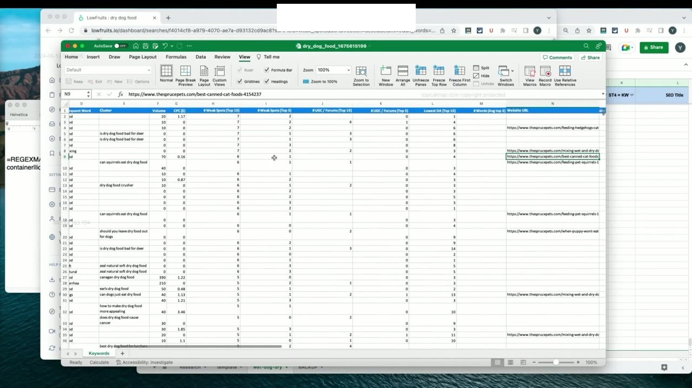
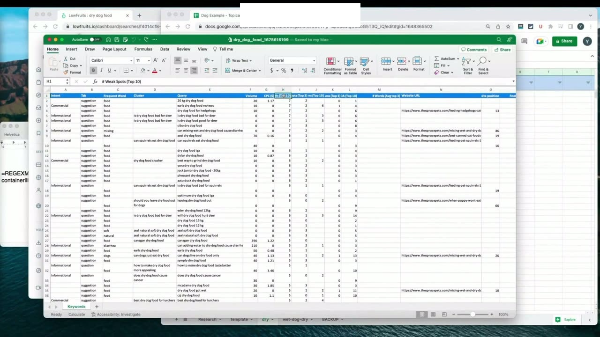
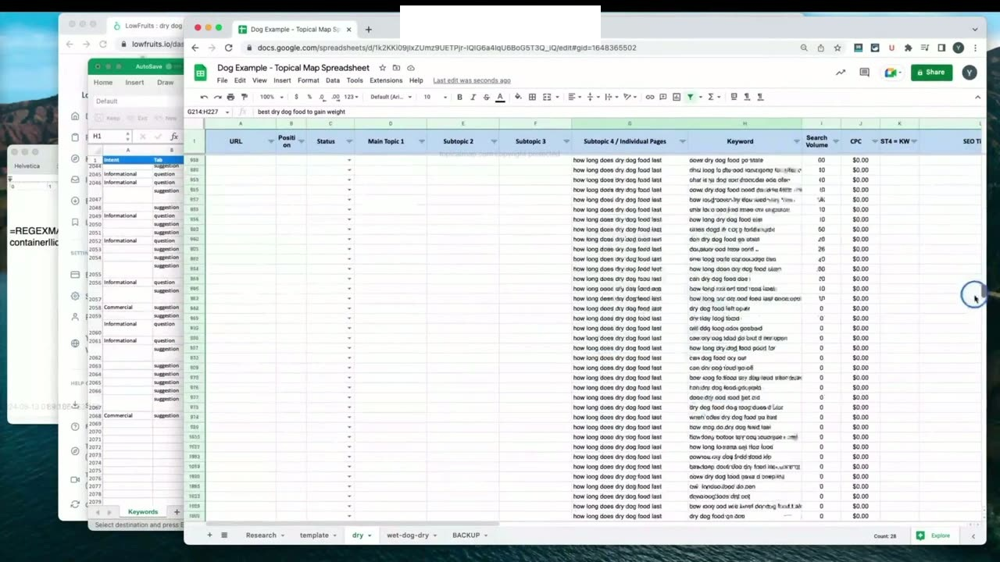
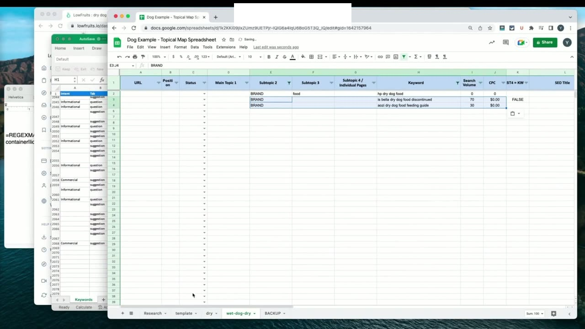
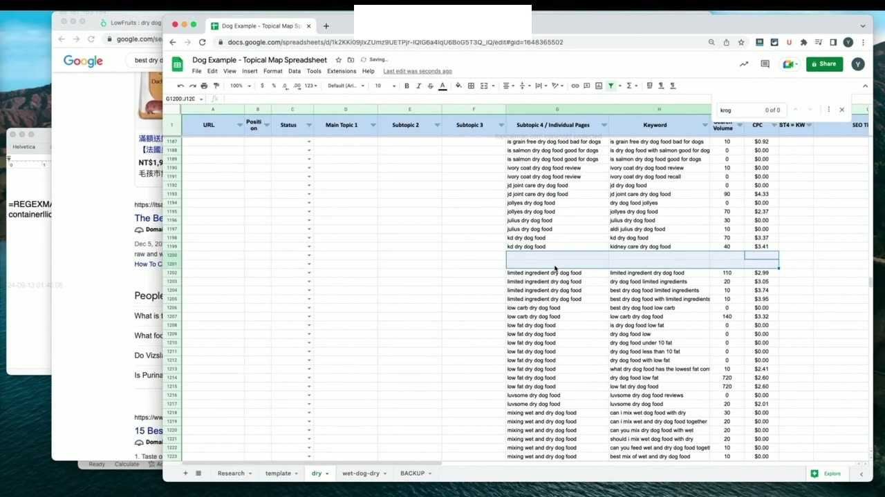

Clustering Keywords
1. Bản chất của Gom cụm từ khóa (Clustering): Ngăn chặn triệt để ăn thịt từ khóa
Với danh sách từ khóa thức ăn khô cho chó đã được lọc sạch sẽ ở bài học trước, bây giờ chúng ta tiến hành sao chép toàn bộ danh sách và chuyển chúng sang tính năng phân cụm của LowFruits.io. Yoyao nhấn mạnh rằng trong kỷ nguyên SEO ngữ nghĩa hiện đại, bạn tuyệt đối không bao giờ được viết mỗi bài cho một từ khóa riêng lẻ như cách làm lỗi thời của 10 năm trước.
Mục tiêu tối thượng của việc gom cụm từ khóa (Keyword Clustering) là: Nhóm tất cả các từ khóa có cùng một mục đích tìm kiếm (Search Intent) và kích hoạt cùng một tập hợp kết quả SERP vào chung một bài viết duy nhất. Điều này giúp tối ưu hóa tối đa chi phí sản xuất bài viết, đồng thời triệt tiêu hoàn toàn nguy cơ ăn thịt từ khóa (Keyword Cannibalization) - tình trạng nguy hiểm khi nhiều trang trên cùng một website cạnh tranh triệt tiêu thứ hạng lẫn nhau.

2. Cấu hình phân cụm trên LowFruits: Bỏ chọn PAA để giữ danh sách tinh gọn
Đầu tiên, Yoyao đặt tên rõ ràng cho báo cáo phân cụm của mình là dry dog food (thức ăn khô cho chó), sau đó dán toàn bộ danh sách từ khóa đã lọc vào ô nhập liệu.
Trong quá trình dán, ông phát hiện có một vài từ khóa nhỏ lén lút lọt qua bộ lọc (ví dụ: thương hiệu HP dry dog food). Yoyao lưu ý rằng điều này xảy ra thường xuyên trong thực tế và hoàn toàn bình thường, bạn có thể dễ dàng xóa hoặc gắn nhãn thương hiệu cho nó sau này.
Một mẹo kỹ thuật quan trọng: Yoyao luôn chủ động bỏ chọn các tùy chọn cào thêm câu hỏi PAA và truy vấn liên quan ở bước này. Lý do là vì chúng ta đang nhập một danh sách từ khóa đã được tuyển chọn kỹ lưỡng; việc kích hoạt thêm PAA ở đây chỉ làm phình to dữ liệu và khiến việc sắp xếp, phân loại sau này trở nên phức tạp hơn rất nhiều. Hãy đảm bảo chọn đúng quốc gia mục tiêu (Hoa Kỳ, Tiếng Anh) và bấm nút bắt đầu phân tích.

3. Quá trình phân tích SERP tự động và Xử lý phân cụm thủ công
Hệ thống LowFruits sẽ tự động cào trang nhất Google cho từng từ khóa để so sánh các đường dẫn URL xếp hạng. Quá trình này thường mất khoảng 10 phút tùy thuộc vào độ bận rộn của các máy chủ tính toán.
Sau khi hoàn tất, Yoyao hướng dẫn kiểm tra tab Clusters. Nếu hệ thống hiển thị số lượng cụm bằng 0, bạn hoàn toàn có thể nhấp vào nút ép buộc phân cụm thủ công (Force Clustering). Điều này xảy ra khi một số từ khóa cuối cùng vừa mới hoàn thành phân tích SERP. Ngay khi bấm nút, hệ thống sẽ tự động gộp các từ khóa có từ 3 đến 4 kết quả URL tự nhiên trùng khớp nhau trên trang nhất Google vào chung một Cụm (Cluster).
Sau đó, chúng ta tiến hành xuất toàn bộ dữ liệu phân cụm ra tệp bảng tính Excel bằng cách nhấn nút Export và làm mới trang để tải tệp về máy tính.

4. Kỹ thuật dọn dẹp và đóng băng bảng tính Excel chuyên nghiệp
Mở tệp bảng tính vừa xuất ra, Yoyao chia sẻ các thao tác dọn dẹp và định dạng bảng tính chuyên nghiệp giúp tăng tốc độ làm việc:
- Đóng băng hàng tiêu đề trên cùng (Freeze Top Row): Giúp bạn dễ dàng cuộn chuột xuống hàng ngàn dòng phía dưới mà không bao giờ bị mất dấu tên cột.
- Chuyển các cột từ khóa khớp chính xác xuống cuối: Để mắt tập trung vào các cột quan trọng nhất.
- Tích hợp tính năng nhận diện website đã có: Yoyao chỉ ra rằng nếu bạn đang tối ưu cho một trang web hiện có, bạn có thể nhập tên miền của mình vào LowFruits để công cụ tự động đánh dấu xem website của bạn đã có thứ hạng cho từ khóa nào chưa.
- Nhóm các cột thông tin điểm yếu và số liệu lại gần nhau: Đặt các cột Truy vấn (Query), Cụm (Cluster), Khối lượng tìm kiếm (Volume) và Giá thầu (CPC) nằm liền kề nhau để tiện quan sát.

5. Tạo tab dữ liệu mới và Chuyển giao cụm từ khóa sang Subtopic 4
Bây giờ, chúng ta tạo một tab mới trong bảng tính và đặt tên ngắn gọn là Khô (đại diện cho chuyên mục thức ăn khô cho chó). Sau đó, bắt đầu tại hàng thứ 2 của bảng tính:
Chúng ta tiến hành sao chép toàn bộ thông tin Cụm (Cluster Name) và dán vào cột Subtopic 4 (Chủ đề phụ cấp 4), đồng thời dán danh sách từ khóa tương ứng vào cột Keyword bên cạnh bằng phím tắt dán giá trị thuần túy (Ctrl + Shift + V trên Windows hoặc Cmd + Shift + V trên Mac). Thao tác này giúp loại bỏ toàn bộ định dạng màu mè không cần thiết.
Tiếp theo, sao chép 5 cột chứa toàn bộ thông tin về điểm yếu SERP (Top 10, Top 3, các diễn đàn thảo luận, nội dung UGC và chỉ số DA thấp nhất) lên đầu bảng để phục vụ cho khâu phân tích đánh giá sau này.

6. Sắp xếp theo Cụm và Kỹ thuật lọc bỏ các chuỗi siêu thị tạp hóa
Khi chọn toàn bộ bảng tính và thực hiện Sắp xếp theo Cụm (Sort by Cluster), bạn sẽ nhìn thấy bức tranh phân nhóm vô cùng rõ ràng: Các từ khóa có cùng chủ đề nằm liền kề nhau theo từng khối. Tuy nhiên, bạn cũng sẽ nhận thấy có những cụm từ khóa đơn lẻ rơi vào tên của các chuỗi siêu thị bán lẻ tạp hóa như Walmart, Tesco, Publix, Costco...
Yoyao giải thích: Một trang web chuyên sâu về cẩm nang dinh dưỡng thú cưng không bao giờ nên viết bài nhắm vào việc tìm cửa hàng tạp hóa địa phương. Do đó, bạn cần tiến hành lọc bổ sung để loại bỏ những thứ này:
- Lọc theo từ khóa
Walmart: Phát hiện hàng loạt truy vấn tìm mua thức ăn tại Walmart, xóa toàn bộ nhóm này. - Lọc theo các chuỗi siêu thị khác: Phát hiện 7 từ khóa chứa
Tesco, các từ khóa chứaPublix... tiến hành xóa sạch khỏi bảng tính. - Lưu ý quan trọng: Yoyao phân biệt rõ giữa tên siêu thị tạp hóa và tên giống chó. Ví dụ khi bắt gặp từ
Vizsla, nếu bạn không hiểu có thể bạn sẽ tưởng đó là tên cửa hàng; nhưng thực chất Vizsla là một giống chó săn nổi tiếng của Hungary! Do đó, phải luôn cẩn trọng tra cứu để không xóa nhầm các giống chó quý giá.

7. Cảnh báo kỹ thuật khi Cắt và Xóa hàng trong Google Sheets
Yoyao đưa ra một lời cảnh báo kỹ thuật xương máu khi làm việc với Google Sheets: Tuyệt đối cẩn thận khi sử dụng lệnh Cắt (Cut - Ctrl + X) trên các hàng dữ liệu đang bị lọc!
Khi bạn lọc bảng tính theo một điều kiện nào đó (ví dụ lọc theo tên một thương hiệu), các hàng dữ liệu hiển thị trên màn hình thực chất bị ngăn cách nhau bởi nhiều hàng ẩn ở giữa (ví dụ hàng 10 và hàng 18 cách nhau 8 hàng ẩn). Nếu bạn chọn hai hàng hiển thị này và thực hiện lệnh Cắt rồi dán sang vị trí khác, Google Sheets sẽ tự động cắt luôn toàn bộ các hàng ẩn nằm ở giữa!
Hậu quả là bạn sẽ vô tình làm xáo trộn và mất dữ liệu của các từ khóa khác. Do đó, quy tắc an toàn tuyệt đối là: Chỉ sử dụng lệnh Sao chép (Copy - Ctrl + C), dán sang vị trí mới, sau đó quay lại xóa các hàng đã chọn một cách có chủ đích.

8. Hoàn tất khâu nghiên cứu và Sẵn sàng cho Học phần 06: Dựng bản đồ có cấu trúc
Sau khi đã hoàn tất việc lọc bỏ các cụm từ khóa rác và tinh gọn bảng tính, chúng ta đã có được một kho tài nguyên từ khóa ngữ nghĩa chuẩn xác 100%, được phân chia thành từng bài viết Subtopic 4 rõ ràng.
Bước tiếp theo trong quy trình tổng thể là chuyển toàn bộ cấu trúc phân cấp này sang việc xây dựng Bản đồ chủ đề hoàn chỉnh: Xác định trang nào là trang trụ cột Pillar, trang nào là bài viết hỗ trợ, thiết lập cấu trúc liên kết nội bộ và lên lịch trình xuất bản nội dung.
Đó chính là nội dung trọng tâm của Học phần 06: Building Structured Topical Maps. Yoyao hẹn gặp lại tất cả học viên trong các bài học thực hành dựng bản đồ tiếp theo!

Nguồn và đối chiếu
- Topical Maps Unlocked 2.0 · 08-Clustering Keywords (Video bài học chính).
- Bản tiếng Anh không có video riêng cho bài học này; nội dung đối chiếu trực tiếp từ slide và video chính.